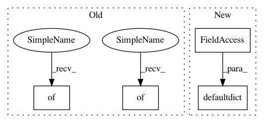

26f35a89a7c6aff435a090cadba9bd1d85e8ed3e,data/social.py,SocialDAO,__init__,#SocialDAO#,9
Before Change
self.config = conf
self.user = {} //used to store the order of users
self.relation = relation
self.followees = {}
self.followers = {}
self.trustMatrix = self.__generateSet()
def __generateSet(self):
triple = []
After Change
self.user = {} //used to store the order of users
self.relation = relation
self.followees = defaultdict(dict)
self.followers = defaultdict(dict)
self.trustMatrix = self.__generateSet()
def __generateSet(self):
triple = []
In pattern: SUPERPATTERN
Frequency: 3
Non-data size: 4
Instances
Project Name: Coder-Yu/RecQ
Commit Name: 26f35a89a7c6aff435a090cadba9bd1d85e8ed3e
Time: 2019-09-20
Author: yuwei57688227/
File Name: data/social.py
Class Name: SocialDAO
Method Name: __init__
Project Name: jbms/beancount-import
Commit Name: e4d313478124e00a931ec40ab25643accad88641
Time: 2020-08-06
Author: dumbpyx@gmail.com
File Name: beancount_import/source/generic_importer_source.py
Class Name: ImporterSource
Method Name: prepare
Project Name: Coder-Yu/RecQ
Commit Name: 26f35a89a7c6aff435a090cadba9bd1d85e8ed3e
Time: 2019-09-20
Author: yuwei57688227/
File Name: data/social.py
Class Name: SocialDAO
Method Name: __init__
Project Name: pgmpy/pgmpy
Commit Name: 53bc1480e10f6594574850a05e20b3616d904dfe
Time: 2014-12-21
Author: abinash.panda.ece10@itbhu.ac.in
File Name: pgmpy/inference/base.py
Class Name: Inference
Method Name: __init__